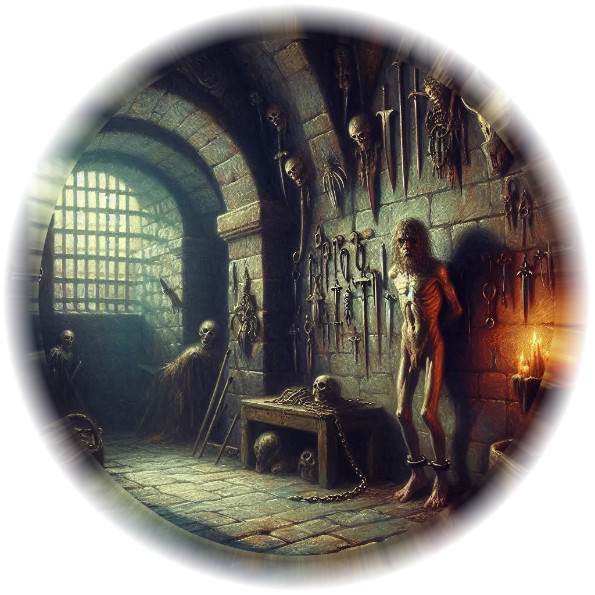

The Magistrate Hall looms in the heart of Belladonna’s central square — a somber, ivy-choked stone building with arched gothic windows, an iron clock tower, and a pair of tarnished bronze gryphon statues guarding its stairs. A pair of banners hang from the second-floor balcony: the green-and-gold sigil of Belladonna and the darker royal sigil of the Hawthorn family.
Vines creep up the north side, as if trying to reclaim the structure. The stones are chipped, stained from weather and time. Black wrought-iron lanterns glow with soft witchlight in the evenings. Crows frequently roost on the clock tower, adding to its eerie reputation.
Interior Description
Entrance Lobby: High vaulted ceilings, a cold stone floor, and a worn red carpet. Citizens line up before a counter where a sleepy clerk files complaints and petitions. Iron chandeliers burn whale-oil lanterns. A statue of the first Magistrate (head missing) stands awkwardly in one corner.
Council Chamber: A round room with tiered seats for council members. The Magistrate’s seat is elevated at the far end, beneath a stained glass window of Lady Belladonna, founder of the township. Hidden runes in the glass flicker under moonlight.
Magistrate’s Office: Dark mahogany furnishings. Two massive bookshelves cover walls filled with tax records, court scrolls, and blackmail dossiers. A globe with secret compartments. A hidden drawer in the desk holds royal correspondence and illegal alchemy contracts.
Archive Vault: Locked behind a steel-reinforced door with a glyph of warding. Scrolls, prisoner logs, deeds, bounty contracts. One shelf is disguised — leading to the secret chamber (see section f).
Holding Cells: Four cramped cells guarded by two sleepy watchmen. Prisoners range from petty thieves to political prisoners “awaiting quiet relocation.”
Detention Officer Quarters: Two level one fighters are usually here around the clock doing shift work to watch the prisoners and perform intake duties.
Bailiffs’ Quarters: One level one fighter is usually here during daytime hours when court is in session.
Pre-Trial War Room: This is a conference room that usually sits empty with a large oak table and a dozen chairs for people of importance to strategize around critical incidents and proceedings.
Rooftop Observatory: Magistrate Dellmar’s private retreat. An enchanted spyglass allows him to observe the town and incoming roadways. Used for both stargazing and surveillance.
Stat Blocks: NPCs
Magistrate Corvin Dellmar Pinkerton
Medium humanoid (human), neutral evil, Level 7 Warlock (Great Old One)
AC: 14 (robes + Mage Armor)
HP: 56 (7d8 + 21)
Speed: 30 ft.
STR 10 | DEX 12 | CON 16 | INT 14 | WIS 11 | CHA 18
Saving Throws: CHA +7, CON +6
Skills: Deception +8, Insight +4, History +5, Arcana +6
Languages: Common, Infernal, Deep Speech
Spells (DC 15, +7 to hit):
Cantrips: Eldritch Blast, Minor Illusion, Mage Hand
Other Features: Awakened Mind (telepathy), Pact of the Tome (ritual casting: Detect Magic, Comprehend Languages)
Special Equipment: Amulet of the Unspeaking Court (prevents scrying and mind-reading)
Backstory: Magistrate Corvin Dellmar Pinkerton
Corvin rose quickly from a minor noble family due to his cleverness and subtle ruthlessness. He is charming and calculating, known for his “open ear” policy — listening to citizen woes while slowly ensnaring them in deals they can’t escape. Unknown to most, he is in secret communication with Varis, the Dark Elf Minister of Trade, and has sold access to Belladonna’s underground passages in exchange for power and forbidden knowledge.
Corvin’s pact is with the Unspeaking Court, eldritch entities from the Shadow Realm. His dreams are plagued by whispers, and he believes he’s destined to be the true ruler of Belladonna when the Hawthorns fall.
Side Quest: “The Whisper in the Well”
Quest Giver: Magistrate Dellmar
Hook: Strange murmurs echo from the disused town well. Dellmar commissions the adventurers to investigate — though his real goal is to recover a relic he dropped into the depths: a bound eye of a forgotten god.
Objective:
Descend into the dry, crumbling well
Traverse an underground crypt crawling with mutated vermin
Defeat the Whispering Sludge (ooze entity corrupted by the relic)
Choose whether to return the relic to Dellmar or destroy it
Eye Ray (1/day): One of the following, random (DC 13):
Madness Beam: WIS save or suffer short-term madness for 1 minute
Blinding Gaze: CON save or blinded for 2 rounds
Memory Sear: INT save or lose a random prepared spell or skill for 1 hour
Horrible Whispers: Aura of 10 ft. causes disadvantage on saving throws vs fear
The Magistrate’s Hidden Dungeon

Location: Beneath the Belladonna Magistrate Hall (see Location 2)
Hidden Purpose: A covert prison and torture chamber used by the Magistrate for political enemies, secret debtors, and victims of blackmail.
Exterior Description
There is no external entrance to this dungeon. Access is granted only via a hidden stone spiral stair beneath the Magistrate’s private wine cellar, revealed by twisting a bottle labeled “Belladonna Reserve — 869 DR”. The stone floor silently rotates, revealing black iron steps that descend into darkness.
The air grows cold almost instantly, and the sound of dripping water echoes below like whispers in a stone throat. The walls are damp, and faint blue glyphs pulse with anti-divination magic.
Interior Chambers
1. Holding Corridor (The Maw)
A long hallway flanked by ten narrow iron-barred cells, each with stone floors and ceilings. Prisoners are kept in magically silenced isolation; any attempt to scream is muffled unless a Dispel Magic is cast.
The far wall bears the emblem of the Magistrate’s office, but warped into a weeping face. Hidden chains in the ceiling can be dropped via a switch in the observation room above.
2. The Interrogation Chamber (“The Root Cellar”)
A stone-walled circular chamber with a drainage grate in the center and chains hanging from all four walls. The floor is slightly bowl-shaped to collect blood. Shelves along the walls house elixirs, truth serums (some expired), and magical implements.
A red-glowing rune circle in the floor can force a creature to relive its worst memory (DC 17 Wis save or be incapacitated by despair for 1 minute).
A disguised viewing lens in the ceiling allows the Magistrate or his aides to observe from above.
3. The Archive of Names
A dusty side room filled with hundreds of scrolls, each bound in black ribbon and labeled with names and dates. Every scroll details the crimes—real or fabricated—of those held or killed in the dungeon.
Touching one scroll without permission triggers a glyph trap (Hold Person, DC 15).
One scroll bears Kira Coldspring’s name—falsely implicating her in a conspiracy with Jorsh the Betrayer.
4. The Forbidden Door (Sealed Cell #X)
An adamantine door sealed with a glyph of warding and three locking mechanisms (arcane, mundane, and blood-coded). Behind it is Prisoner X—a former royal steward who discovered the Magistrate’s alliance with Minister Varis and refused to stay quiet.
Prisoner X is alive but broken, barely sane, and guards a mind-fragment of a secret that could bring down both Varis and the Magistrate.
NPC Stat Block: Magistrate Velloran Duskmere
Medium humanoid (human), Lawful Neutral (corrupt), CR 6
AC: 17 (noble armor + Mage Armor)
HP: 72 (9d8+27)
Speed: 30 ft.
STR 11 | DEX 14 | CON 16 | INT 17 | WIS 13 | CHA 18
Saving Throws: INT +6, CHA +7
Skills: Insight +5, Persuasion +9, Deception +8, History +6
Languages: Common, Elvish, Draconic
Abilities:
Court Immunity: Cannot be lawfully arrested without royal decree
Whispers of Power (1/day): Dominate Person on someone within the court system
Dark Leverage: Add double proficiency to all checks when blackmail can be leveraged
Magical Appraisal: Detect Magic at will, Dispel Magic 2/day
Spells (Warlock 5 - Archfey Pact):
Cantrips: Prestidigitation, Eldritch Blast
1st (2): Charm Person, Armor of Agathys
2nd (2): Mirror Image, Hold Person
3rd (2): Counterspell, Hypnotic Pattern
Backstory: Magistrate Velloran Duskmere
Duskmere came from humble beginnings but rose quickly through the judiciary by being ruthlessly efficient and always one step ahead of scandals. He was once a just man, but was ensnared by Minister Varis’s web of leverage and promises of power.
He now maintains this hidden dungeon as a tool to eliminate threats quietly, imprison political enemies, or manipulate nobles into “cooperation.”
Despite his outward calm and refined demeanor, Duskmere is deeply paranoid, keeping records on everyone—especially Kira Coldspring and Princess Hawthorn.
There is a 1d4 chance that Duskmere is in the dungeon or in the Magistrate's office, visiting Magistrate Pinkerton as an emissary from the Royal Palace.
Side Quest: “Name on the Scroll”
Quest Giver: Moth, a former jailer-turned-informant found in Belladonna’s alleys.
Objective:
Infiltrate the Magistrate’s Hall
Access the secret stair and descend into the hidden dungeon
Find and destroy Kira’s scroll before it is copied and sent
Complication: The party discovers Prisoner X, who offers a deal—set him free in exchange for the truth about Varis and the Magistrate’s pact.
Rewards:
A royal pardon for Kira
A permanent contact in the royal resistance
A set of Truth-Sensing Rings (see below)
Hidden Puzzle Room: The Cell of the Ever-Watchful Eye
Accessed Through: Pulling a false torch in the Archive of Names
A dark chamber with no visible door. In the center: a single unblinking stone eye on a pedestal.
Puzzle: The eye must be stared into while speaking a truth about the observer’s own past. Each PC who participates sees a vision of their worst lie or guilt.
If the party tells three genuine truths aloud, a hidden compartment opens.
Treasure:
Truth-Sensing Rings (set of 3): While attuned, wearer knows if someone is lying within 30 ft. (no action needed)
Vial of Perdition Ink: Can erase a name from any official magical document or cursed scroll
Map to the Tunnel of the Ashen Root: Bypasses palace guards and leads directly to the Ministry of Trade
Monster Stat Block: False Sentinel (CR 4)
Type: Construct guardian animated by guilt and secrets
HP: 60
AC: 18
Speed: 20 ft.
Immunities: psychic, poison, fear
Special:Guilt Gaze – DC 15 Wisdom save or be stunned for 1 round while hallucinating a moral failure
Attacks: Slam (2d10 + 4 bludgeoning); on critical, target gains a level of exhaustion